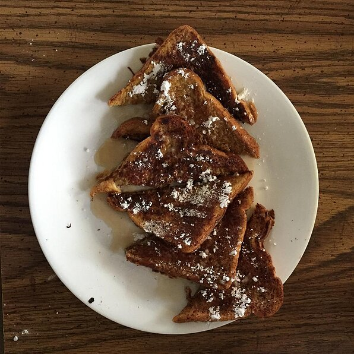

<!DOCTYPE html>
<html lang="eng"></html>
<head>
  <title>French Toast</title>
  <meta charset="UTF-8" />
</head>
<body>
  <h1>French Toast</h1>

  
  <h4><strong>Description</strong></h4>
  <p>Very quick, easy, and delicious french toast!</p>
  <h4><strong>Ingredients</strong></h4>
  <ul>
    <li>3 eggs, beaten</li>
    <li>2 teaspoons white sugar</li>
    <li>1 teaspoon milk</li>
    <li>1 teaspoon ground cinnamon</li>
    <li>¼ teaspoon salt</li>
    <li>6 slices bread</li>
  </ul>
  <h4><strong>Directions</strong></h4>
  <ol>
    <li>
      Mix beaten eggs, sugar, milk, cinnamon, and salt in a large, shallow bowl.
      Dip bread slices into egg mixture to coat.
    </li>
    <li>
      Heat a skillet over medium heat. Cook bread in hot skillet until browned
      completely, 2 to 3 minutes per side.
    </li>
  </ol>
</body>
